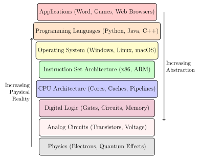
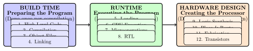

Chapter 1: Introduction: The Magic Behind Code Execution¶
When you type print("Hello, World!") in Python and see the output on your screen, you’ve just witnessed one of the most remarkable chains of transformation in modern technology. Your simple, human-readable instruction has traveled through multiple layers of abstraction, been translated by sophisticated software, loaded into memory, and finally executed by billions of microscopic switches moving electrons in precise patterns.
This seemingly magical process involves a complex journey through twelve distinct stages, each representing decades of engineering innovation. Our goal in this book is to demystify this journey completely, taking you from the code you write to the electrons that flow through silicon.
1.1 The Computing Stack: Layers of Abstraction¶
Modern computing systems are built as a stack of abstractions, where each layer hides the complexity of the layers below it. This design principle allows software developers to write programs without needing to understand quantum physics, and allows physicists to design transistors without needing to understand software algorithms.

1.2 Our Journey: From High-Level Code to Electrons¶
This book follows a simple addition operation through all twelve stages of transformation:
#include <stdio.h>
int main() {
int a = 15;
int b = 25;
int result = a + b;
printf("The result is:
return 0;
}
We’ll focus particularly on the line int result = a + b; and trace how this simple addition becomes a physical reality involving electrons moving through transistors.
1.2.1 The Twelve Stages¶
Our journey encompasses twelve distinct stages, which we can group into three major phases:

Key Takeaway
Key Insight: These three phases happen at different times:
-
Hardware Design: Happened years ago when engineers designed your CPU
-
Build Time: Happens when you compile your program
-
Runtime: Happens every time you run your program
Your simple addition operation leverages work done by thousands of engineers across decades!
1.3 Why This Journey Matters¶
Understanding how code becomes reality provides several benefits:
1.3.1 For Software Developers¶
-
Performance optimization: Understand why certain code patterns are faster
-
Debugging skills: Know what can go wrong at each layer
-
Architecture decisions: Make informed choices about algorithms and data structures
-
System programming: Work effectively with compilers, linkers, and operating systems
1.3.2 For Computer Science Students¶
-
Unified understanding: See how all CS courses connect
-
Foundation knowledge: Essential for advanced topics like computer architecture, operating systems, and compilers
-
Interview preparation: Many technical interviews probe system understanding
-
Research preparation: Background for graphics, machine learning, and systems research
1.3.3 For Technology Enthusiasts¶
-
Appreciation: Gain deep respect for engineering achievement
-
Informed decisions: Better understand computer purchasing decisions
-
Future trends: Understand why certain technologies emerge
-
Problem solving: Apply systematic thinking to other domains
Real-World Analogy
Consider how understanding car mechanics helps even if you’re not a mechanic:
-
You drive more efficiently (parallels writing better code)
-
You diagnose problems better (parallels debugging)
-
You make better purchasing decisions (parallels architecture choices)
-
You appreciate the engineering marvel (parallels understanding computing)
Similarly, understanding computing systems enhances your relationship with technology.
1.4 What Makes This Journey Remarkable¶
Several aspects make the code-to-electrons journey extraordinary:
1.4.1 Scale and Precision¶
Modern processors contain billions of transistors, each smaller than a virus, switching billions of times per second with atomic precision. Yet they work reliably for years.
1.4.2 Speed¶
From the moment you press "Enter" to when you see output, your code travels through all twelve stages in microseconds. This involves:
-
Operating system scheduling (microseconds)
-
CPU instruction execution (nanoseconds)
-
Transistor switching (picoseconds)
-
Electron movement (femtoseconds)
1.4.3 Abstraction Layers¶
Each layer hides complexity while enabling functionality. A Python programmer doesn’t need to understand semiconductor physics, yet their code ultimately depends on quantum mechanical effects.
1.4.4 Collaborative Achievement¶
Your simple program works because of contributions from:
-
Language designers (Python, C, Java creators)
-
Compiler engineers (GCC, LLVM teams)
-
Operating system developers (Linux, Windows teams)
-
CPU architects (Intel, AMD, ARM designers)
-
Chip designers (Layout and verification engineers)
-
Fabrication engineers (Semiconductor manufacturing)
-
Physicists and materials scientists
Practical Example
The Scale of Modern Computing:
Let’s put the numbers in perspective for a modern smartphone:
-
Transistors: 15 billion (more than twice the number of people on Earth)
-
Size: 5 nanometer process (50 atoms wide)
-
Speed: 3 GHz (3 billion operations per second)
-
Power: 5 watts (less than a small light bulb)
-
Cost: $400 (cheaper than most textbooks per transistor)
Your pocket contains more computing power than entire universities had in the 1980s!
1.5 Chapter Summary¶
In this introduction, we’ve established our mission: to understand how simple code becomes physical reality through twelve stages of transformation. We’ve outlined the three major phases (build time, runtime, hardware design) and set expectations for our learning journey.
The next chapter begins our exploration with the most familiar stage - writing high-level code. We’ll examine what makes programming languages "high-level" and why this abstraction is so powerful.
Remember: every expert was once a beginner. The computing stack represents one of humanity’s greatest intellectual achievements, built by thousands of brilliant people over decades. You’re about to join the ranks of those who truly understand how our digital world works.
Next: Chapter 2 - High-Level Programming Languages: Where It All Begins